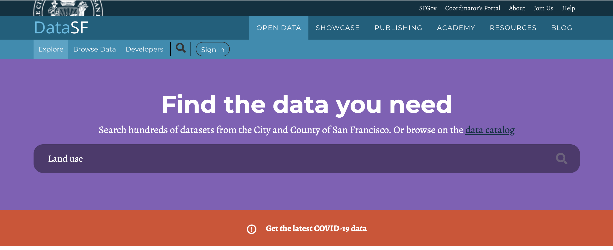
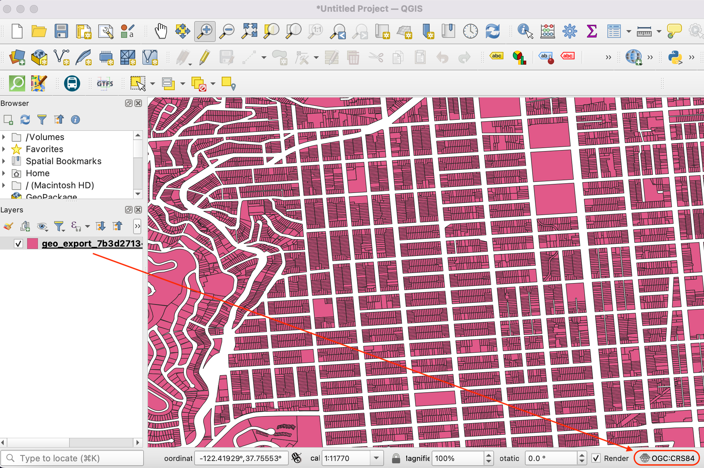
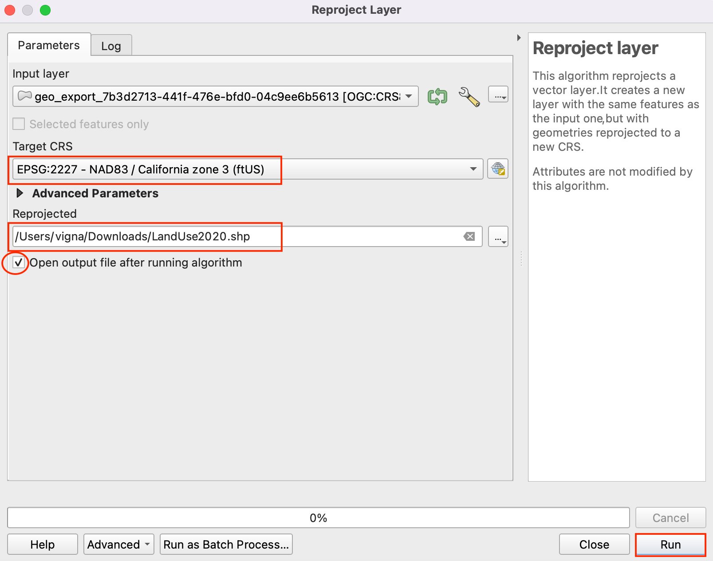
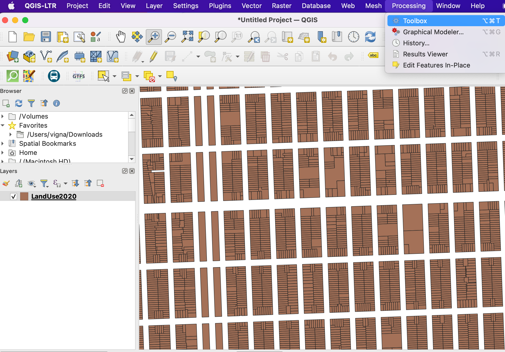
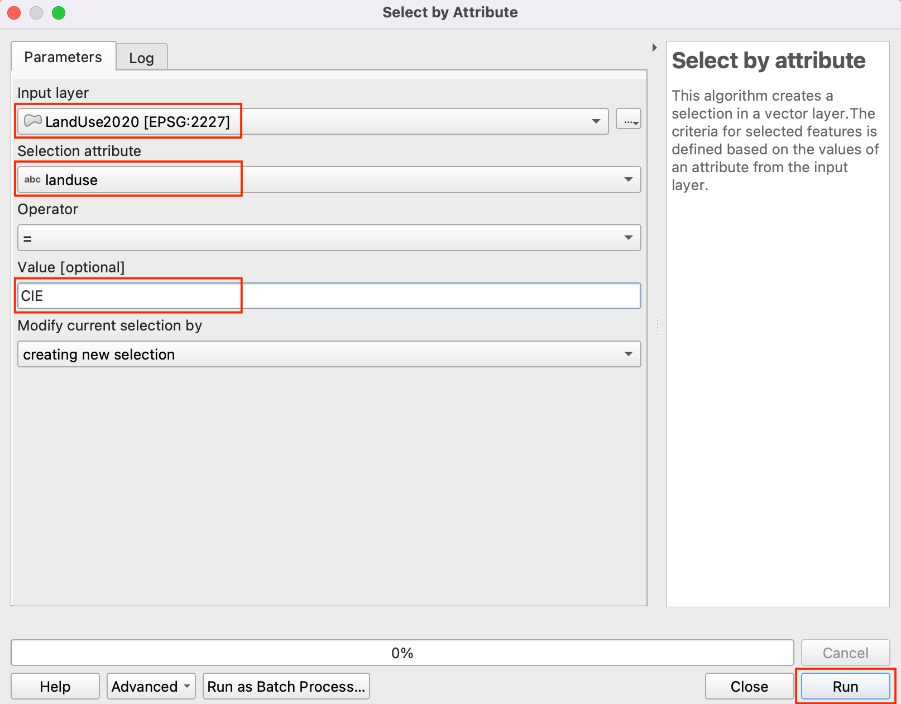
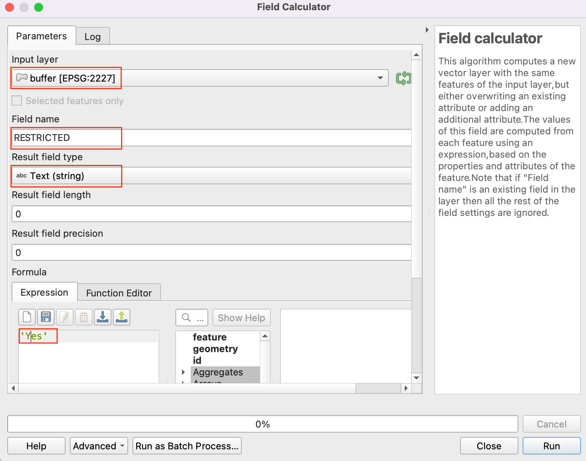
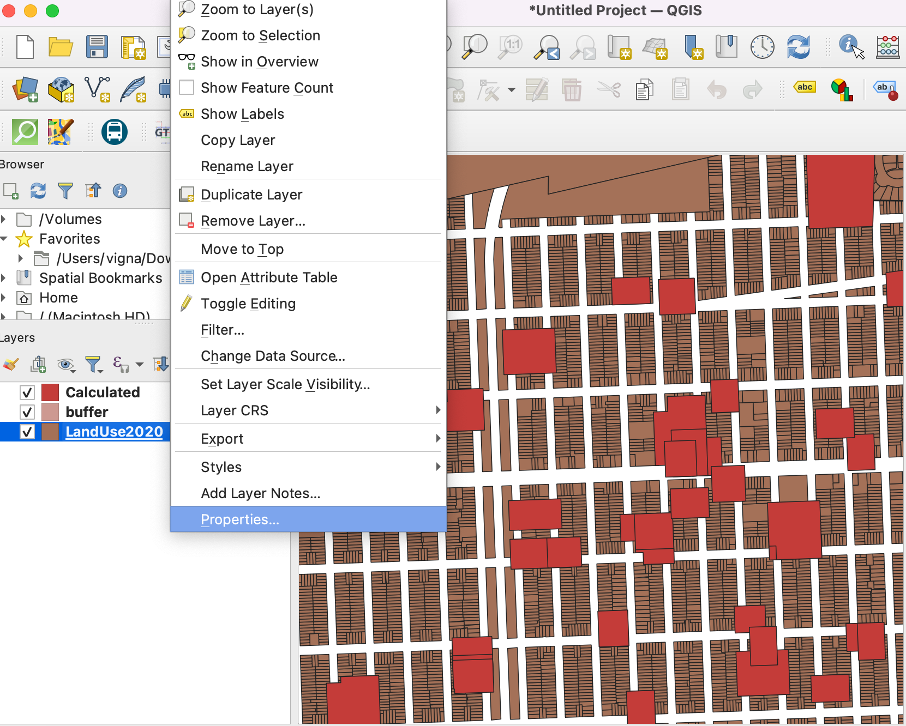

Ujaval Gandhi
Ujaval GandhiDeterminación de zonas de influencia de usos de la tierra (QGIS3)¶
En este tutorial trabajarás con los datos de uso de la tierra de una ciudad y determinarás las zonas de influencia alrededor de una parcela concreta. Este análisis es necesario para establecer un corredor de restricciones en torno a la contaminación acústica o el tráfico pesado.
Visión general de la tarea¶
Empezaremos con un archivo shape de parcelas de la ciudad de San Francisco y utilizaremos técnicas de geoprocesamiento y análisis espacial para determinar un buffer de zona restringida alrededor de todas las propiedades con uso institucional del suelo.
Otras competencias que aprenderá¶
Creación de buffers rectangulares en QGIS
Utilización de un índice espacial para acelerar el análisis
Obtener los datos¶
Los datos proceden del Ayuntamiento de San Francisco en forma de polígonos de parcelas con atributos que indican las categorías de uso del suelo. Puede encontrar los datos para el tutorial en el portal de datos abiertos DataSF.
Veamos los pasos para descargar un archivo shape poligonal con categorías de uso del suelo para cada parcela de San Francisco.
Vaya al portal de datos - https://datasf.org/opendata/. Busque la palabra clave
Uso de la tierraen la barra de búsqueda.Haga clic en el primer resultado de la búsqueda para visualizar y exportar los datos.

Verá los datos y atributos. Haga clic en Exportar para descargar los datos de
Land Use 2020.
En las opciones de exportación, haga clic en Archivo shape para descargar el archivo shape poligonal de los datos.

Se descargará un archivo zip del uso de la tierra. Vaya a la pestaña Acerca para leer información sobre las categorías y unidades de uso de la tierra que le será útil más adelante en este tutorial.

Para mayor comodidad, a continuación puede descargar directamente una copia del archivo shape:
Procedimiento¶
Abra QGIS. Haga clic en el icono para añadir la capa.

Cambie a la pestaña Vector y navegue hasta el archivo shape de uso del suelo. Haga clic en Añadir.

Observe el nombre SRC en la esquina inferior derecha de QGIS. Indica que los datos están en el sistema de coordenadas geográficas
OGC:CRS84. Haga clic en él.El diálogo del Sistema de Referencia de Coordenadas («SRC») del proyecto mostrará que el SRC seleccionado es
WGS 84 (SRC 84). La unidad de medida para este SRC esGrado. Todo el geoprocesamiento de esta capa se realizará en las unidades nativas del SRC. La unidad grado es inapropiada para este análisis.
Reproyectaremos la capa al SRC proyectado adecuado para la región -
NAD83 / California zona 3 (ftUS). Esto esEPSG:2227que utiliza el datum NAD83 con unidades de medida en pies.Vaya a :menuselección:`Vector --> Herramientas de Gestión de Datos --> Reproyectar Capa`.
En el cuadro de diálogo Reproyectar capa, seleccione la capa cargada como Capa de entrada. Haga clic en el icono situado junto al selector para seleccionar el SRC de destino.

Busque
EPSG:2227en la barra y seleccione el SRCNAD83 / California zona 3 (ftUS). Haga clic en Regresar para continuar.
Guarde la salida Reproyectado. Despliegue las opciones de exploración y seleccione Guardar en archivo.

Guarde el archivo shape de salida en la carpeta elegida como
LandUse2020.shp. Marque la opción Abrir el archivo de salida después de ejecutar el algoritmo para añadir la capa reproyectada a QGIS.Elimine la capa original con SRC WGS 84 de QGIS. Seleccione la capa y haga clic en el símbolo Quitar capa.

Continuaremos el proceso con la capa reproyectada. Como vimos en la sección Acerca del shapefile descargado en el portal de datos, la clasificación es la siguiente.
CIE = Cultural, Institucional, Educativo
MED = Médico
MIPS = Oficina (Gestión, Información, Servicios Profesionales)
MIXED = Usos mixtos (sin residencial)
MIXRES = Usos mixtos (con residencial)
PDR = Industrial (Producción, Distribución, Reparación)
RETAIL/ENT = Venta al por menor, Entretenimiento
RESIDENTE = Residencial
VISITANTE = Hoteles, servicios a los visitantes
VACANT = Vacante
ROW = Derecho de paso
OPENSPACE = Espacio abierto
En este tutorial, sólo nos interesa el uso institucional del suelo. Así que podemos consultar el valor CIE en la tabla de atributos. Vaya a .

Busque la herramienta Seleccionar por atributo en la caja de herramientas de procesamiento. Haga doble clic para abrirla.

En el cuadro de diálogo Seleccionar por atributo, establezca
LandUse2020como Capa de entrada. Seleccionelandusecomo Atributo de selección e introduzcaCIEcomo Valor`. Haga clic en Ejecutar.

Verá que las parcelas que coinciden con nuestra consulta aparecen resaltadas en amarillo. Se trata de todas las parcelas que pertenecen al uso institucional del suelo en la ciudad.

Ahora podemos crear un buffer alrededor de las parcelas seleccionadas. De vuelta en la ventana principal de QGIS, abra la Caja de herramienta Procesos. Busque y localice la herramienta Buffer. Haga doble clic para abrirla.

En el cuadro de diálogo Buffer, seleccione LandUse2020 como Capa de entrada. Marque la casilla :guilabel: Sólo objetos espaciales seleccionados para que el búfer se aplique sólo a las parcelas institucionales seleccionadas. Crearemos una zona de seguridad de 100 pies alrededor de cada parcela. Introduzca 100 pies como Distancia. Los buffers por defecto tienen forma circular. Dado que estamos tratando con datos de parcelas, una zona de influencia rectangular es más apropiada donde cada borde de la parcela será desplazado por la distancia de amortiguación. Seleccione
Cuadradocomo Estilo de límite final yMitercomo Estilo de unión. Haga clic en el botón Examinar situado junto a Buffered y seleccione Guardar en archivo.

Introduzca el nombre del fichero de salida como
buffer.shpy haga clic en OK. Haga clic en Ejecutar.

Una vez finalizado el procesamiento, se añadirá una nueva capa tampón a QGIS. Estos polígonos representan la zona de influencia de restricciones en torno al uso institucional del suelo.

Ahora ya sabemos qué zonas de la ciudad entran dentro de la zona restringida. Sería útil identificar todas las parcelas que caen en esta zona y añadir un atributo que indique que se aplica una restricción a esa parcela. Primero vamos a añadir una columna a los polígonos de amortiguación. Busque en la caja de herramientas de tratamiento. Haga doble clic para abrir.

En el cuadro de diálogo Calculadora de campos, asegúrese de que se ha seleccionado Tampón como Capa de entrada. No necesitamos guardar esta capa, así que deje vacío el campo Archivo de salida. Introduzca
RESTRICTEDcomo resultado Nombre de campo. Establezca el tipo de campo Resultado comoCadena. EscribaSícomo Expresión. Haga clic en Ejecutar.

Una nueva capa llamada Calculada será añadida a QGIS. Abra la Tabla de Atributos y compruebe que en esta capa existe una nueva columna llamada RESTRICTED con valor Sí.

22. Next step is to do a Spatial Join to add this attribute to the original parcels layer based on which parcels intersect with the buffer zone. The LandUse2020 layer has more than 100,000 elements. We will add spatial indexing to the features to improve the performance and speedup the spatial join operation.
Check out the course Spatial Indexing section to understand more about this.
Now, search and locate the tool from the Processing Toolbox and double-click to open.

Seleccione
LandUse2020como Capa de entrada y haga clic en Ejecutar.
El índice espacial se crea para la capa. Puede verificarlo comprobando la propiedad de la capa. Haga clic con el botón derecho en la capa y haga clic en Propiedades.
Cambie a la pestaña Fuente y busque en la sección Geometría. Indica que el índice espacial existe.

Ahora podemos hacer la unión espacial. Busque la herramienta en la caja de herramientas de procesamiento. Haga doble clic para abrirla.

Queremos Unir a objetos espaciales en la capa
LandUse2020Comparando con la capaCalculated. Queremos unir atributos de prestaciones que se cruzan. Marque la casillaintersect. Haga clic en el botón Examinar junto a Campos a añadir.

Seleccione sólo el campo
RESTRICTEDy haga clic en :guilabel:”Aceptar”.

En Tipo de unión, seleccione
Tomar atributo sólo del primer objeto espacial coincidente. A continuación, haga clic en … junto a Capa unida y seleccione Guardar en archivo.

Introduzca el nombre de la Capa unida como
LandUseWithRestrictions.shpy haga clic en Aceptar. Haga clic en Ejecutar.

Una vez finalizado el procesamiento, obtendrá una nueva capa
LandUseWithRestrictions. Abra la tabla de atributos y examine la columnaRESTRICTED. Las parcelas que se encuentran a menos de 100 pies de una parcela institucional tienen ahora el valor «Sí», lo que indica que se aplica una restricción a esa parcela. Otras parcelas tienen un valorNULLque indica que no hay restricción.
If you want to give feedback or share your experience with this tutorial, please comment below. (requires GitHub account)